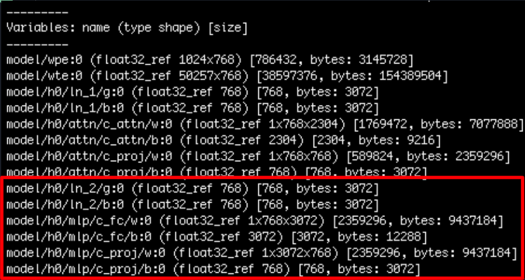
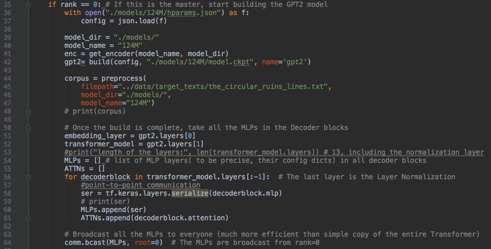
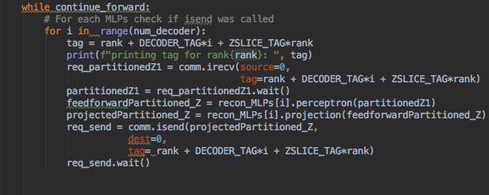

Textual Style Transfer with GPT-2
Group 8 - Michael Downs, Cameron Hickert, Wen Rui Liau, Wisoo Song
Overview
-
Description of problem and the need for HPC and/or Big Data
Description of solution and comparison with existing work on the problem
Description of your model and/or data in detail
Technical description of the parallel application, programming models, platform and infrastructure
Links to repository with source code, evaluation data sets and test cases
Technical description of the software design, code baseline, dependencies, how to use the code, and system and environment needed to reproduce your tests
Performance evaluation (speed-up, throughput, weak and strong scaling) and discussion about overheads and optimizations done
Description of advanced features
Final discussion about goals achieved, improvements suggested, lessons learnt, future work, interesting insights
Citations
1. Description of problem and the need for HPC and/or Big Data
Problem
In our project, we will be exploring the problem of Textual Style Transfer with GPT-2. Two facets of any written work are style and content. Content pertains to the events or ideas being described whilst Style pertains to the manner in which the events or ideas are being described. Different authors and/or mediums have different styles. Textual style transfer aims to modify the style of one work to mimic the style of another while keeping the content relevant to the original. We will be using the GPT-2 model developed by OpenAI to perform textual style transfer on diverse and large datasets.
Need for HPC and Big Data
There is a need for both big compute and big data processing in our project. On the Big Compute front, we will need a lot of compute resources to train the GPT-2 model for textural style transfer. GPT-2 comes in various sizes and all have a significant number of parameters to train. The "small" model that we are working with has 117 million parameters to train and our rough time estimate shows that we require 6 hours on single GPU to get reasonable (conditional) initial results using 7MB of text and 33k iterations. HPC will allow us to speed this up.
On the Big Data front, the original GPT-2 model is originally trained with 40GB of internet text. This includes WikiText, which contains 100 million tokens from verified “good” and “featured” Wikipedia articles as well as Treebank-2 which contains 1 million tokens from WSJ articles. The large sizes of the datasets that we are dealing with implies a clear for Big Data processing for us to handle these cases.
2. Description of solution and comparison with existing work on the problem
OpenAI existing work
In scoping the existing work on this problem, we refer to the paper and associated codebase written by OpenAI linked here. OpenAI provides the GPT-2 model architecture that they tested for various different Natural Language Processing (NLP) tasks. In their paper, they outlined their efforts in using the model for zero-shot reading comprehension, summarization, translation and question answering. However, they do not outline the effectiveness of the model on Textual Style Transfer
Our solution
In our project, we will be using the original GPT-2 model to perform textual style transfer from a source text to a target text. Moreover, OpenAI does not provide the trained parameters for the original GPT-2 model. As such, our solution involves training this huge model as well to do textual style transfer. Lastly in comparison with the original GPT-2 model, our solution will also train the parameters in parallel which we will further elaborate in our technical descriptions below. Overall, we find that our project is extremely novel compared to existing work done in the field and contributed to interesting findings which we describe in the sections below.
3. Description of your model and/or data in detail
Description of Data
I will first describe the source data that we used for our textual style transfer application. For our source textual data, we used the zothique stories obtained from this link and Project Gutenberg books obtained using from this repository . The raw project gutenberg corpus is almost 9GB compressed that requires processing. We used the super_cleaner functionality from this repository to strip of all of the project gutenberg boilerplate. The pgcorpus repository also generates a metadata file while we used to separate the project gutenberg books into the genres: juvenile, 19th century, science fiction, adventure, fairy tales, and poetry. Of those, we only used the first three.
Description of Model
The core model we used for textual style transfer is GPT-2. GPT-2 is a transformer-based Neural Net for unsupervised Multitask Learning. In contrast to other transformers, this model consists of Decoder blocks only (as opposed to a combination of Encoders and Decoders) and the model architecture is seen below. In the original paper by OpenAI, this model is able to perform zero-shot reading comprehension, summarization, translation and question answering to varying degrees of success.

In describing our model for textual style transfer, I will first outline the core algorithm in generating new text from our corpus of data outlined above. The algorithm for generating text takes as input a pre-trained GPT-2 and a text file. The text file is chunked into contiguous groups of sentences which are used as prompts for GPT-2. The contiguous group is then shifted by some step size. For this project, the chunk/window size was 9 and the step size was 4. 4 sentences were generated at a time using GPT-2. We used nltk as the sentence tokenizer.
4. Technical description of the parallel application, programming models, platform and infrastructure
Parallel Application
Our parallel application involves exploiting a range of different parallelism levels including many-node and many-core parallelism as we used multiple GPUs on multiple nodes. There are two main areas to parallelize: the training phase and the generation phase.
In the training phase of our project, the transformer computations and gradient updates in GPT-2 fine-tuning will be parallelized. In the generation phase, we will be parallelizing the feedforward process of the input source file.
Programming Model
In deciding on the proper model for data parallelism, we used the ring all-reduce algorithm via Horovod that utilizes open MPI. Compared to the alternative of distributed tensorflow's worker-parameter server model, Horovod's ring all-reduce algorithm is superior in terms of reducing network bandwith bottleneck due to the absence of the need for a parameter server. An overview of this parallel algorithm is shown below.

On the other hand, we also explored the possibility of model parallelism by exploiting the transformer architecture. A key property of gpt-2 is that in the decoder blocks, the input word in each position flows through its own path. Up to the self-attention layer, there exist positional dependencies between embedded word vectors, but the inputs to the feed-forward layer do not have those dependencies. Thus, the each of the paths that the attention-weighted vectors take can be executed in parallel while flowing through the feed-forward layer and the projection layer. It follows from this observation that we define ‘c’ in Amdahl’s law to be the ratio of the parameters in the feedforward neural network of each encoder multiplied by the number of encoders in the GPT-2. In case of the smallest GPT-2 model, we have 28.3 million parameters that can be updated in parallel. This is about 23% of the total number of parameters in GPT-2. Even more promising is the fact that the bigger versions of GPT-2 differ mostly in the number of Decoder stacks, meaning the parallelizable portion only increases with bigger models.
Platform and Infrastructure
Our language of choice will be Python which allows us to access a wide range of different libraries for our project. Our machine learning framework used is Tensorflow and Keras as well as Horovod as mentioned above. Our platform operating system used is Deep Learning Amazon Machine Image (Ubuntu) which came with Tensorflow and Horovod pre-configured. Our infrastructure of choice is Amazon's Elastic Compute 2 (EC2). Originally, we planned to use Harvard's FAS Cannon supercomputer as well but had issues with the parallel implementation which we will outline later. For the single-node training on AWS, we used the g4dn.12xlarge EC2 instance. This instance has four GPUs, each with 16GB of memory. For the multimode training, we used four g4dn.xlarge instances, which each have one GPU with 16GB of memory. Since these instances are both members of AWS’ G4 family of instances, the GPUs they use are NVIDIA T4 Tensor Core GPUs. These decisions were motivated by a need for increased GPU memory on the one hand, and AWS’ VCPU limits on the other. The g4dn.12xlarge instance has 48 VCPUs, which was at the top of our VCPU limit. Originally we had been using G3 instances, but we found that these instances did not have enough GPU RAM (8GB, using NVIDIA Tesla M60 GPUs), resulting in a segmentation fault.
5. Links to repository with source code, evaluation data sets and test cases
Source Code
Our entire codebase for this project is hosted on our team's github repository linked here. In that repository, we have also linked a folder titled results which contain our outputs from training our GPT-2 model on a variety of different nodes on AWS. These outputs allow us to better understand the accuracy and speed of scaling of GPT-2 which we will present in the plots below. We have also included several style-transfered texts that our generated from our trained GPT-2 model located under the style_transferred folder. The target texts for style transfer are a wikipedia article on MC Escher, a news article on hurricanes in the gulf of Mexico, and a short story by jorge luis borges. The filenames follow the following naming convention style_numepochs_target_window_step. For example: 19th_1200_escher_9_4. These style transfered texts are how we qualitatively evaluated the effectiveness of our model in performing the textual style transfer. As an example, here is an excerpt taken from juv_900_hurricance_9_4.
May is the country in which most of these men in America travel in the late-season and in a level sense of the country, so strong an effort to move across to reinforce new shipping during the autumn will appear with gaining strength at extreme hours when both men are already together. Thus far only, that time before the 1915 sick-leave of the African coast of Mexico has been fostering with the passage between San Diego and the Rio Guayana Warinar region.
During our training phase, we will be timing our training of GPT-2 on two different sources of text from Eldritchdark and Project Gutenberg. We will be using the Zothique text as well as the Juvenile text. The Zothique text represents the smallest source of text (201Kb zipped) available on Project Gutenberg whilst the Juvenile text represents the largest source of text (484Mb zipped). Using this spectrum of sizes allows us to better appreciate the performance of our model outlined in Section 7 below.
6. Technical description of the software design, code baseline, dependencies, how to use the code, and system and environment needed to reproduce your tests
Software design
Data Parallelism
Since data parallelism is explained in detail in section 4, section 8 and owes a lot to the implementations of Horovod library, we elaborate on the software designs relevant to the model parallelism.
Model Parallelism
Model parallelism refers to the parallelization paradigm that uses the same data for every thread, but splits the model among threads. As mentioned briefly in section 4, the multilayer perceptrons(feedforward layers) and the projection layers can be extracted from each of the 12 decoder blocks and distributed evenly among processes / nodes. Next, these layers can be applied independently to the partitioned attention weighted matrix to process it in a parallel manner. Following this method, after the initialization of the full architecture and distribution, the master process is only responsible for embedding the corpus matrix, layer normalization and gathering processed vectors. To illustrate the architecture, we provide the following image.
The red box indicates the weights and bias parameters contained in the first decoder block. the 'c_fc' stands for perceptron layer, while 'c_proj' stands for the projection layer. Both of these can be distributed as a package to exploit model parallelism. The below code section demonstrates how we implemented this idea.
From line 56 to line 61, the master process serializes the decoder blocks' MultiLayerPerceptron instances. Then, in line 64, the serialized MLPs are broadcast to all the nodes using OpenMPI (mpi4py).
The worker nodes selectively reconstruct the MLP portion of the decoder blocks and receive partitioned attention-weighted matrices from the master node. The workers execute forward runs and project the results back to the embedding dimensions. Finally, they report the results back to the master process. More details can be found in /src/parallel_test.py.
The code can be run with the following commands:
"cd src"
"mpiexec -n 13 python -m mpi4py ./parallel_test.py"
Because the program assumes that each process is allocated a decoder block, 'numprocs' has to be a number larger than 12.
Dependencies
Python
- python=3.7
- numpy
- tensorflow==2.0.0
- keras
- horovod
- regex
- re
- mpi4py
- nltk
- json
- pickle
System and Evironment
AWS instance: The g4dn.12xlarge
Operating System / Image: Deep Learning Amazon Machine Image (Ubuntu)
7. Performance evaluation (speed-up, throughput, weak and strong scaling) and discussion about overheads and optimizations done
Speedup/Scaling
As mentioned above, we ran our parallel model on an AWS EC2 g4dn.12xlarge instance. This model had 4 Nvidia T4 Tensor Core GPUs, which allowed us to test and exploit parallelism in our code. As a baseline, we first ran our code on a single node and increased the number of processes on that node. We plot the amount of time needed for different amount of steps/epochs during our training of the model. We present our plots for this on Zontique and Juvenile below:

We then proceed to analyze the parallel results of our code. Instead of varying the number of processes on each node, we now vary the number of nodes for our training phase. We present our plots for this on Zontique and Juvenile below:

Discussion of Overheads and Optimizations done
By both varying the problem size and number of nodes, we have shown the weak and strong scaling for our parallel application. Interestingly, our parallel "multi-node" case showed slowdown compared to the single node case. In some cases, this slowdown can be severe, showing an almost 2x slowdown when comparing the time needed to perform training on the Juvenile and Zotique datasets when 4 nodes/processes are involved. Moreover, we also noticed that increasing the level of parallelism in our application did not result in any speedups even in the 1 node case. This implies that there is significant overheads which we investigated further. Upon further research investigation, we noticed that the communication costs for our application is immense. As supported by this article here, data parallelism does not yield a good result due to the amount of data that needs to be passed around the nodes. During each backward pass of our training phase, we need to broadcast all gradient values to all other GPUs. With 117 million parameters to train in our smallest example of GPT-2, this represents a huge amount of communication overhead which outweights the computational benefit that we got from scaling the number of processors. Theoretically, there are optimizations that we could have pursued to reduce communication costs in our project. We could have reduced the parameters of the number of parameters with layers such as max pooling or using convolution layers. However, that will edit the fundamental structure of GPT-2 that is empirically tested by OpenAI. Moreover with the initial 117 million parameters to train, it is not feasible to decide on which layers to modify given the timeframe that we have.
8. Description of advanced features
Horovod + Ring all-reduce algorithm
The main advanced feature in our parallel programming model is our API/programming model usage of Horovod and the Ring-All-Reduce algorithm. This algorithm was not discussed in class but a solution which we found to have great potential in speeding-up parallel applications. Horovod is a distributed deep learning training framework for TensorFlow, Keras, PyTorch, and Apache MXNet. This framework is based on MPI4Py and developed/supported by Uber Engineering. In class, we mostly explored Master-Worker models (all-reduce) that is commonly seen in the vanilla implementation of OpenMPI. However, there are advantages of Horovod and the Ring-All-Reduce algorithm over this vanilla implementation. As part of our exploration of this model, we also performed an asymptotic analysis of these two algorithms and found that the ring-all-reduce algorithm was superior in terms of preventing the network bandwidth bottleneck. This is outlined in the image below:
Adopting this advanced feature was a challenging task for our team as there was less support and documentation available for us compared to vanilla solutions. This included less academic papers or tools accessible to us for this project. This became especially relevant during the scaling phase of our project, as we were aware that from internal benchmarking tools and peer-reviewed papers, Horovod’s communication overhead increases significantly as the number of nodes increases (especially with a model as large as ours).
Accessing Textual Style transfer
Another advanced feature that we explored was the possibility of incorporating quality metrics in our final project. Quality metrics will provide us with a structured methodology in accessing the effectiveness of our textural style transfer from a source to a target text. We explored different approaches to do this from academic papers such as one from the MIT media lab linked here. This assessment will be based on 3 facets of evaluation, namely:
- Style transfer intensity: How different are the texts?
- Content Preservation: How similar is the content?
- Naturalness: How natural is the output?
9. Final discussion about goals achieved, improvements suggested, lessons learnt, future work, interesting insights
Goals achieved
In our project, we have achieved most of the goals that we set out to achieve. We ran our parallel application for textual style transfer on both a single node as well as a multi-node system. We have also investigated how model's training scales with different number of nodes and processes. This led us to interesting findings about the disadvantages of Horovod in data-intensive applications. In this project, we have also shown the use of the novel parallel programming model of Horovod's Ring-all-reduce algorithm on an AWS EC2 cluster.
Lessons learnt/interesting insights/challenges with running Horovod on Harvard Cannon
Our original plan was to use Harvard’s Cannon research computing cluster to run the training. We were able to implement the serialized training of the GPT2 language model on the Cannon cluster, but the Horovod parallelization was significantly more difficult. The team spent a considerable amount of time pursuing this option, but ultimately opted to utilize AWS compute resources. The error messages were slightly cryptic, and after we realized the segmentation fault on the AWS implementation was a simple Out-Of-Memory case that could be cured by boosting RAM, we attempted to boost the memory available to the job we were running on Cannon’s GPU partition. However, the issue persisted. Eventually, it appeared that the source of the segmentation fault lay in the specific versions of OpenMPI and GCC that we were installing via the modules ready for easy installation on the cluster. Horovod relies on GCC version 4.9 and either version 3.1.2 or version 4.0.0 of OpenMPI. Unfortunately, installing the correct OpenMPI module required an upgrade to a more recent version of GCC. Thus, the fault persisted. One potential path to deal with the situation would be to manually install the correct versions of GCC and OpenMPI from source into our home directory. We pursued this course in parallel with our implementation on AWS. Eventually, we were successful in the AWS implementation and found that the speedup produced allowed us to train the model in a reasonable amount of wall-clock time. Given this success in combination with ongoing obstacles in the manual installation of the correct OpenMPI and GCC versions (and the recognition that the bug perhaps would persist regardless of the new installation), we opted for the AWS path. Additionally, we noted that the time per training step for our serial training implementations on both Canon and AWS system were comparable, leading us to conclude that investing the additional hours to re-implement the parallelized Horovod training on the Canon cluster would not be necessary.
Future Work
There are several areas of future work that we propose for our project. Given more time, we can use the larger GPT-2 models as well as experiment with the vanilla all-reduce algorithm on MPI. On an ambitious level, we can also modify the core GPT-2 model from OpenAI to be more suited for this task of textual style transfer. Lastly, we can also frame the textual style transfer problem more rigorously and use the metrics we originally proposed from the MIT Media Lab academic paper.
10. Citations
- MPI on AWS - Harvard CS205 - Spring 2020 - Infrastructure Guide - I7
- Blog Post by OpenAI on GPT-2 and language models
- Orange Erotic Bible repository for initial project inspiration (Warning: this repository is potentially offensive)
- Article by Tim Dettmers on parallelizing deep learning on GPUs
- Paper by MIT Media Lab on assessing textual style transfer.
- Project Gutenberg text used as a source text
- EldritchDark text used as a source text
- Cleaner functionality repository used to clean the source text
- GPT-2 in Keras and Tensorflow2.0 modified and used to develop /src/parallel_test.py
- Illustrated GPT-2 detailed analysis on GPT-2 structure and photos used for illustration